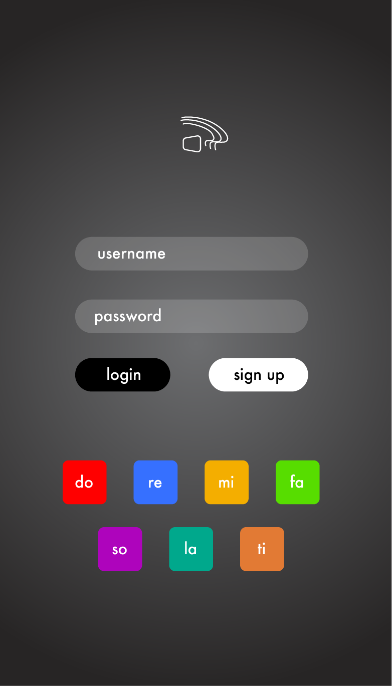
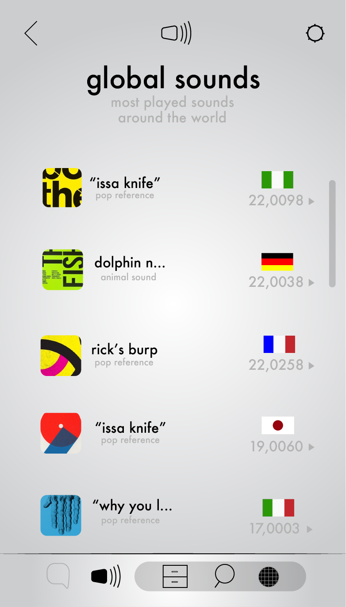

I worked on the mock-up for an app for a final project. And the app I desided to mock-up is an idea I have thought about for a while, so it was exciting to work on.
Snapchat and instagram are well known apps which make pictures(images) social in their own different ways. We also have apps such as spotify, apple music and soundcloud which are meant for music and in some cases are social apps. However, I beleive the social aspects of these sound media apps are lacking. Becasue of this realisation, I came up with 'Soundit', an app which's design objective is to create a sound oriented social media app.
Madlipz is an app created for individuals to make, share and view voice overed videos.It is a great example of an app which successfully uses sound as a driving content requirement.
Snapchat is a social media application which uses pictures as its leading content requirement.It has been successful in doing so in a multitude of ways such as playing with the limitations put on the posts.
The target audience is the young-hearted. Those who are ready to dive in, head first, into a new and exciting adventure and experience a new form of communicating.
The Audience would need to be able to find a variety of sounds sampled for the app. They should also be able to communicate through a messages section with both text and audio from the app.
There should be a variety of graphics which, when tapped on, should make a sound assigned to them. Users should be able to slide from page to page(one page for messaging, and the other for viewing your sound collection).
Here's the mock-up of different aspects of the app.
The "do, re, mi" buttons would make sampled sounds already stored in the app, as a prelude to what to expect. It would als affect the soundwaves on the logo.
When you eventually log in, this is the page which you land on.
The sound archive is the center of the app. It is where you view all the saved sounds which are the the sounds you can conviniently find when messaging a friend.
The second major section of the app is the messaging section where you can text your friends and use the sampled sounds to chat.

You can also easily search for new friends in the messaging section.
Chatting with a friend becomes more interestng with the apps main feature, sampled sounds. Here's a sample of the use of the sampled sounds.
A sub-section of the archive is the sound search, which is self explanatory. You can find new sounds by typing in keywords.
Another sub-section of the archive is the global sounds, which is displays the currently most played sounds in different countries.
The top right corner of the app is where the settings are contained.